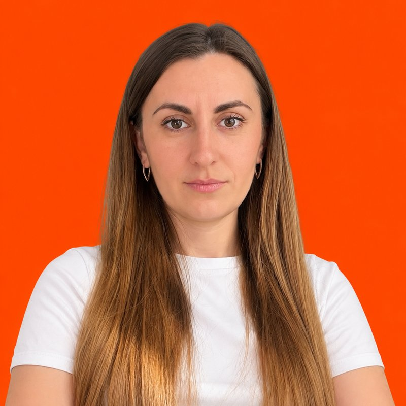
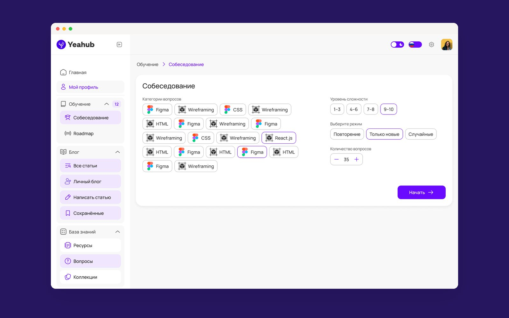
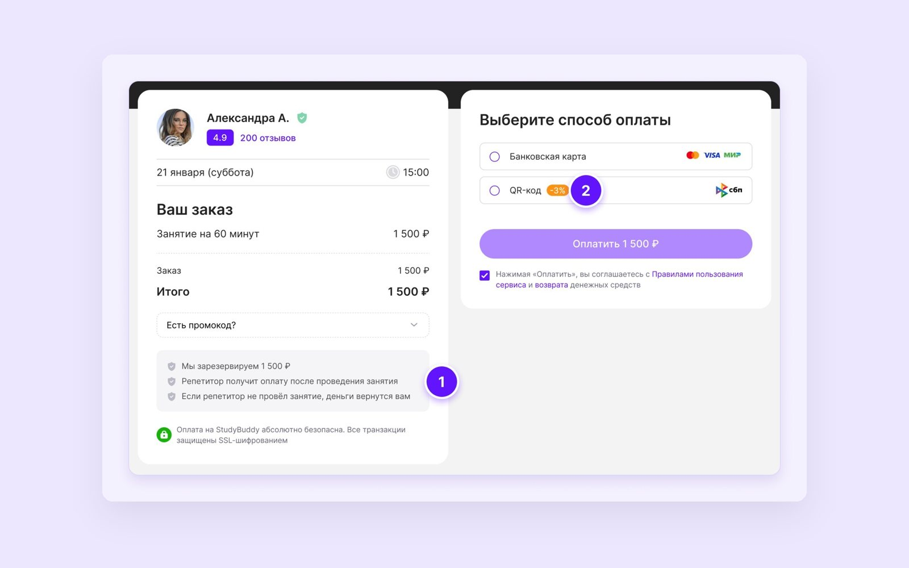
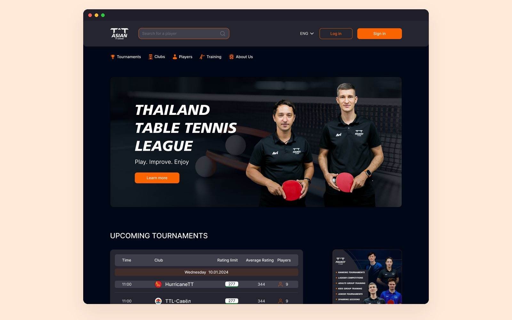
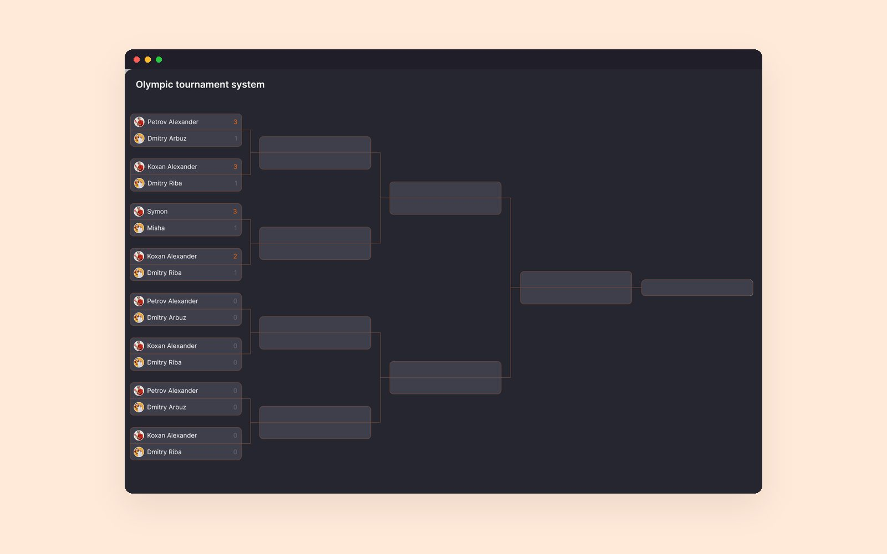
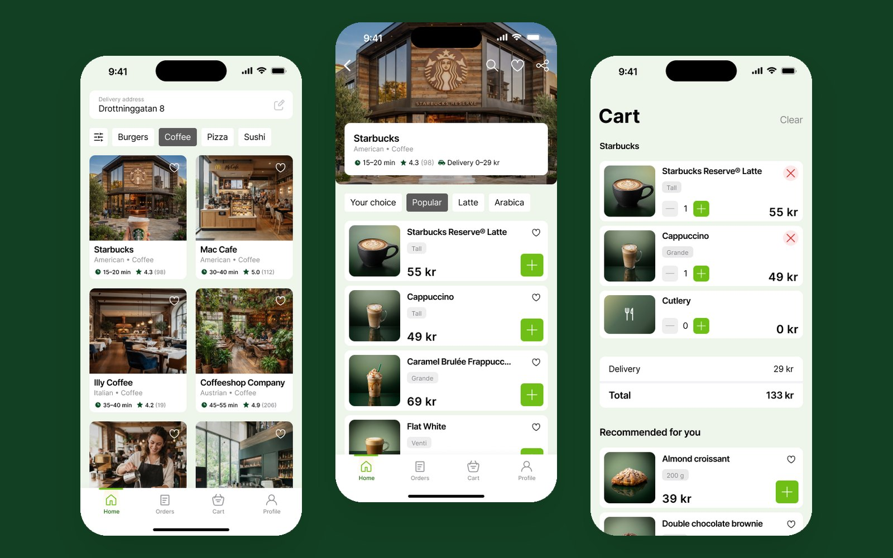
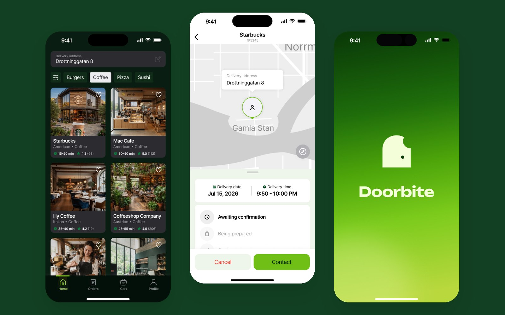
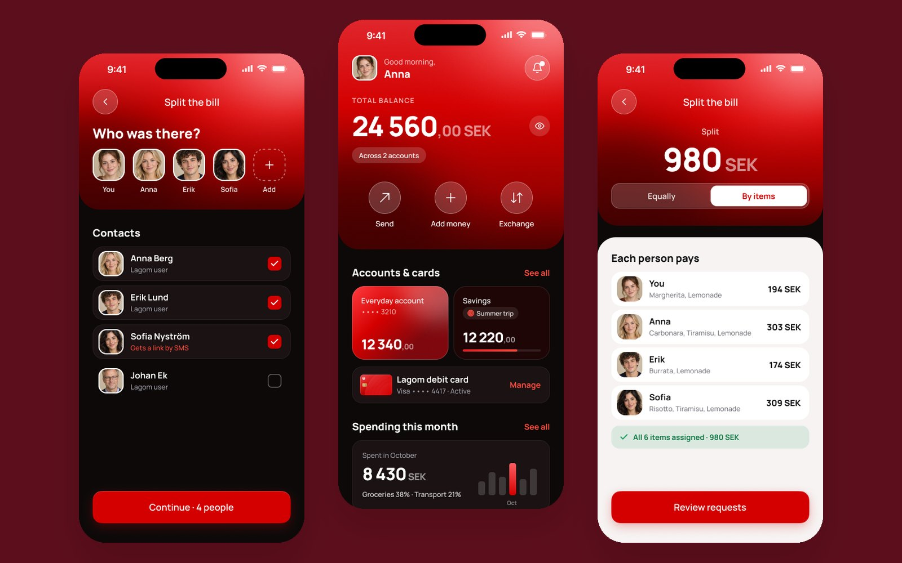
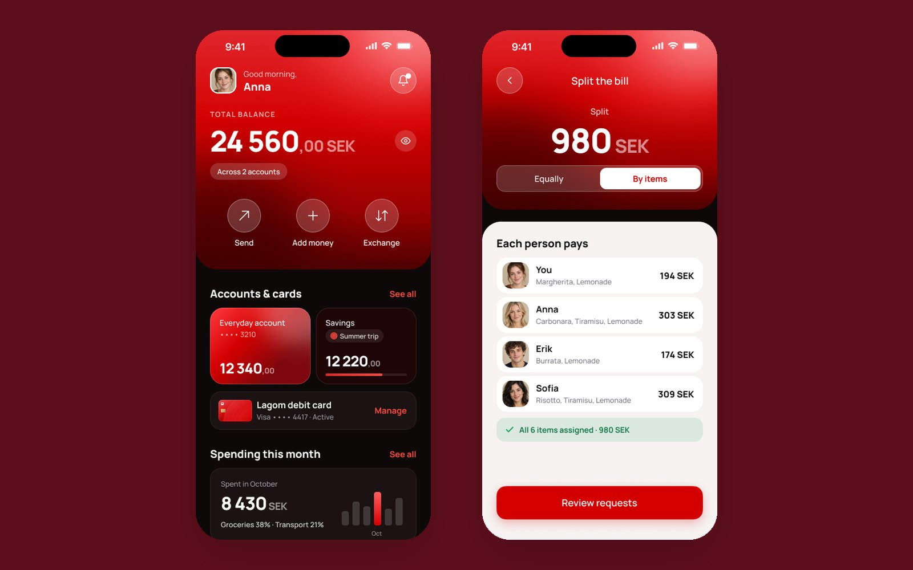

Research & discovery
Interviews, surveys, competitor reviews and moderated usability tests — and clear limits on what each of them can show.
Hi, I'm Svitlana — UI/UX designer in Stockholm
4.5 years of designing web platforms and mobile apps for learning, marketplaces, sport and fintech — research first, then structure, interfaces and handoff that developers can build.
People I have designed for, often in the same product.

Expertise
Interviews, surveys, competitor reviews and moderated usability tests — and clear limits on what each of them can show.
Products where learners and mentors, students and tutors, players and organisers each need their own path, rules and tools.
Design systems, states and edge cases, and handoff developers can build from — in daily work with founders and dev teams.
Selected projects


YeaHub
An online platform where IT specialists prepare for technical interviews. I designed the whole service — question bank, interview simulator, roadmap, vacancies, CV tools and mentorship — for learners, mentors and admins.


Study Buddy
A marketplace where students find tutors. Research showed the real problem was fees, trust and payment risk, so the design work became as much about service rules as about screens.


Asian TT League
A table tennis platform in Thailand for players, clubs and organisers — with tournament software that runs four bracket formats live at events.


Doorbite
A coffee and food delivery app for people who work at a desk in Stockholm, run like a client project — research, MVP scope, a design system and usability tests. It builds on my food delivery client work, which is under NDA.


Lagom
A self-initiated mobile banking concept built around control over money and shared expenses, with Split the bill as the signature flow.
What colleagues say
I particularly valued her ability to connect individual features into a coherent user experience. She collaborated effectively with our developers, clarified interface behaviour and paid close attention to error, loading and empty states.
Ruslan Kuyanets · CEO & Founder, YeaHub
About
I'm from Ukraine and have lived in Sweden for about four years. My first degree is in economics — management of foreign economic activity — which still helps me think about business goals, costs and risks, not only screens.
I started in freelance UI/UX, then moved into long product work: a year on a tutoring marketplace with a Design Lead, and two and a half years as the only designer of an interview-preparation platform, working closely with the founder and developers.
Contact
I'm open to UI/UX roles and freelance projects. Write to me by email or on LinkedIn.
sergeevna8893@gmail.comMessage me on LinkedIn